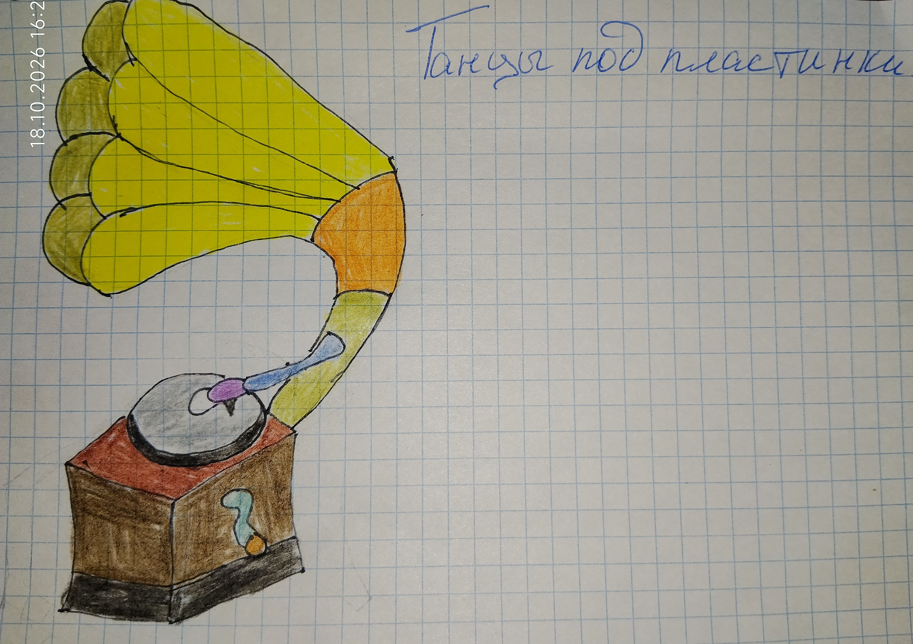

(Рисунок: Граммофон)

А по вечерам, когда все дела были сделаны, я устраивала настоящий концерт. Я включала бабушкин проигрыватель пластинок, доставала из шкафа её платья, надевала их — они были мне велики и пахли бабушкой. Потом обувала её туфли на каблуках — и танцевала.
Я кружилась по комнате, представляла себя взрослой, красивой. Пластинка шипела, игла шуршала, музыка играла — и мне казалось, что весь мир смотрит на меня и улыбается.
Бабушка сидела в кресле, смотрела на меня и смеялась:
— Ну, артистка растёт!
А кошка сидела в углу, головой в угол, и умывалась — будто и не замечала моего концерта.